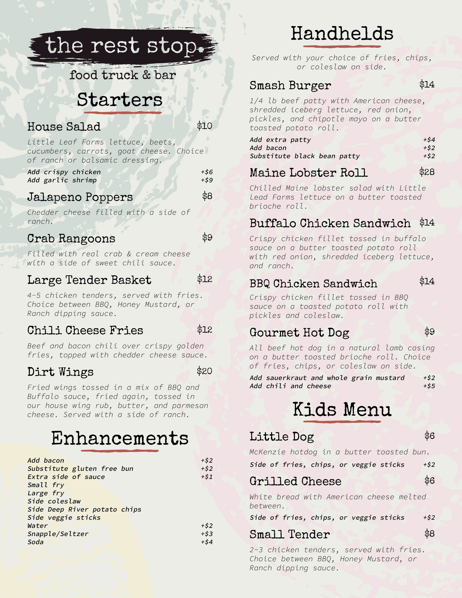
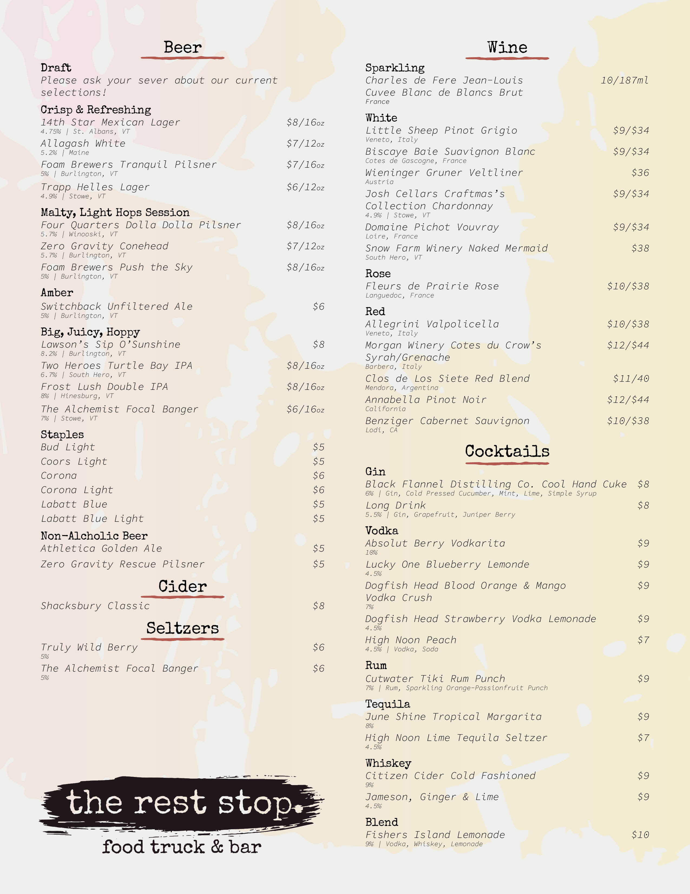
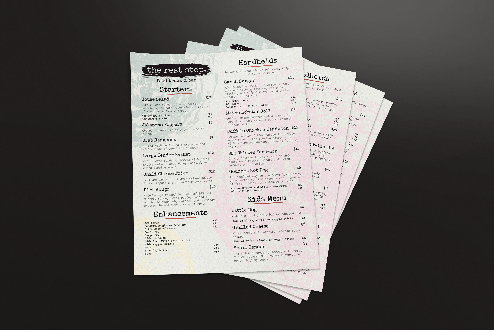
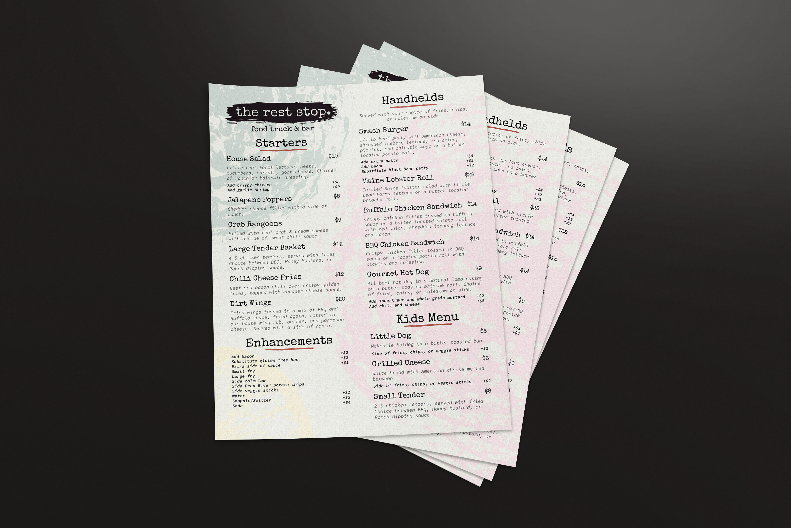

October 2025 // Personal
For the past three summers, I've worked at THE REST STOP, a local spot that's become like a second home for me - not just because of the time I've spent there, but because of the people. Having been there all three years they've been open, I've grown close with both my coworkers and my bosses, who've built something really special.
As a fun farewell to our third season, I decided to take on a self-initiated rebrand of THE REST STOP - partly as a creative challenge, and partly as a thank-you to a place that's meant a lot to me. I want to be clear: this wasn't about saying, “your branding needs fixing.” It was about exploring how their identity could evolve while still honoring what's already there. The current branding was created in-house by non-designers (which is bound to have its quirks), but it's always had charm and personality. With this project, I wanted to see how that could be refined and deepened.
The concept came from a TikTok or Instagram Reel I'd seen where someone painted with food - literally using it as stamps to create texture and pattern. I'd also seen something similar done with bread for a bakery mockup on Pinterest, and it finally clicked that this could make sense for THE REST STOP. Since food is at the heart of everything they do, why not use the food itself to build the brand?
Even though this was a full rebrand concept, I didn't want it to feel disconnected from THE REST STOP's roots.
I experimented with stamping various foods in black paint, photographing the results, and using Image Trace in Adobe Illustrator. I also mixed a bit of black paint into water and poured it over paper to create abstract, fluid backgrounds. The result is a visual language that feels handmade, imperfect, and full of character, much like the food and experience at THE REST STOP. I also aimed for consistency between the food and drink menus. Previously, each had very different styles, so I unified them to feel like parts of one cohesive identity.
When I showed the concept to my bosses after our final night of the season, I wasn't sure how they'd take it. But they genuinely loved it. When I explained the food-stamping concept, one of them said, “Oh my god, why didn't you lead with that?! That's awesome!” That reaction meant a lot. It showed me that I'd hit the right balance between creativity and authenticity, keeping the existing brand alive while embracing change and evolution.
This project started as a passion piece, but it might not end there. There's a good chance I'll be working with THE REST STOP in the future to officially refresh their branding and merchandise. One of my bosses even mentioned making bandanas with flying smash burgers on them, which sounds like an absolute blast. For now, this lives in my Projects section as a conceptual piece, but it may very well evolve into a real client collaboration down the road. This page will continue to exist here no matter what happens, staying true to what I set this out to be: something not made for profit, but made as a genuine thank-you.
This project reminded me how meaningful it can be to design for places and people you care about, to build visuals that reflect not just a brand, but the community and energy behind it. It also taught me how to approach rebranding with respect: not to overwrite what exists, but to expand on it, bringing out the soul of what's already there. After not having done major design work for a while, it felt incredibly good to do something with meaning behind it - something not just for myself, but something that genuinely helps others.
|  |  |
 
